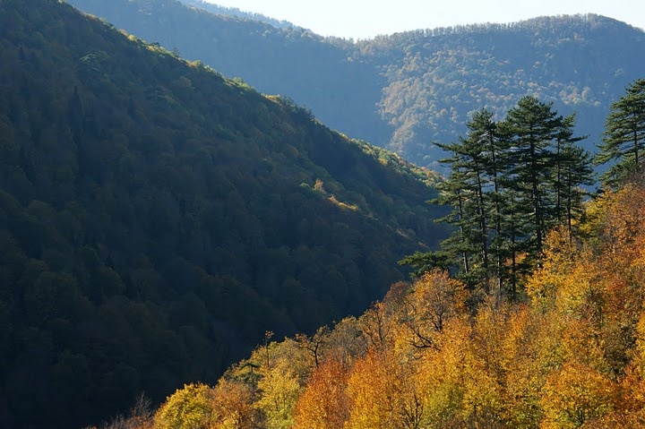

Türkiye’nin en büyük blok ormanları olarak seçilen Yenice Ormanları aynı zamanda WWF tarafından korunması gereken 100 alandan bir tanesi ilan edilmiştir. Yenice, 1461 senesinde Fatih Sultan Mehmet tarafından Cenevizlilerin elinden alınmış olan bir ilçedir. Bölgeye ulaşım insanların en çok dikkatini çeken noktalardan biri olmaktadır. Bunun sebebi ise bu şirin, ufak ilçeye ulaşmak için toplamda 16 adet tünelin aşılması gerektiğidir.
Ormanların içerisindeki çeşitli şelaleler, farklı renklerdeki çiçekleri ile huzur ile dolu görülesi bir alan haline geliyor. Yürüyüş yapmayı sevenlerin bir numaralı adresi olabilecek olan bu orman gerçekten doğal güzellikleri ile sürprizler ile dolu bir parkur çıkartıyor karşımıza. Doğanın içinde harika zaman geçirmek istiyorsanız eğer burası kesinlik ile tam da aradığınız yer olacaktır.
Bölgede yer alan Yenice ırmağı ise yerleşik alanın içerisinden geçmekte ve bölgenin kara parçasını iki parçaya bölmektedir. İçinden nehir geçen bu harika bölgede doğa ile günlük yaşam bir arada sürüp gitmektedir. Ormanların en önemli bölgesi is kesinlik ile Arboretum ve ”Tabiat Koruma Alanları” olmaktadır. Bu bölgede birçok yerde göremeyeceğiniz binlerce farklı ağaç türünü görebilirsiniz. bu ağaçların arasından bazılarının boy ve enleri o denli gelişmiştir ki bu tip ölçüleri dünya üzerinde başka bir yerde görmek mümkün değildir. Aynı zamanda soyu tükenmeye yüz tutmuş değerli ağaçları da bölgede görmeniz mümkün olacaktır.
Bölgede yer alan kanyonlar, burada kanyoning gibi doğa sporlarının gelişmesini sağlamışlardır. Doğanın içerisinde kamp yapmak bu ormanlarda mümkündür. Dilerseniz turlar ile giderek daha kalabalık gruplar halinde de gidebilirsiniz. Bölgedeki fauna sebebi ile her yerde kamp yapak mümkün değildir. Belirli kamp alanlar vardır ve kamp için gelen turistlerin bu bölgelerde kamp kurmaları rica edilir.
Bölgede aynı zamanda dağ tırmanışı, yürüyüş, rafting gibi sporlar da yapılabilmektedir. Kamp alanları arasında en çok bilinenler ise; Şekermeşe, Sorgun Yaylası, Kent Ormanı, Eğriova Göleti olmaktadır. Bu alanların yanı sıra bölge de birçok farklı kamp alanı da mevcuttur. Bölgede genellik ile yaz aylarında kamp yapılması önerilse de yılın dört mevsimi çadır kurmanız mümkündür.
Göz At:Safranbolu Gezilecek YerlerBölgede kamp yapabileceğinizi yazımızda zaten belirtmiştik. Fakat ben rahat bir yatakta uyumak isterim diyenlerden iseniz eğer ormanlara son derece yakın olan otelleri de tercih etmeniz mümkün olacaktır. Albergo Butik Otel, Asmazlar Bağ Evi, Güdükoğlu Saklı Bahçe gibi çeşitli otelleri tercih edebilirsiniz. Bu oteller hem yürüyüş bölgelerine yakındır hemde son derece temizdir. Bölgeye geldiğinizde bu oteller haricinde birçok farklı oteli de tercih edebilirsiniz. Bunun yanı sıra Karabük merkezindeki otellerde de kalmanız mümkün olacaktır.